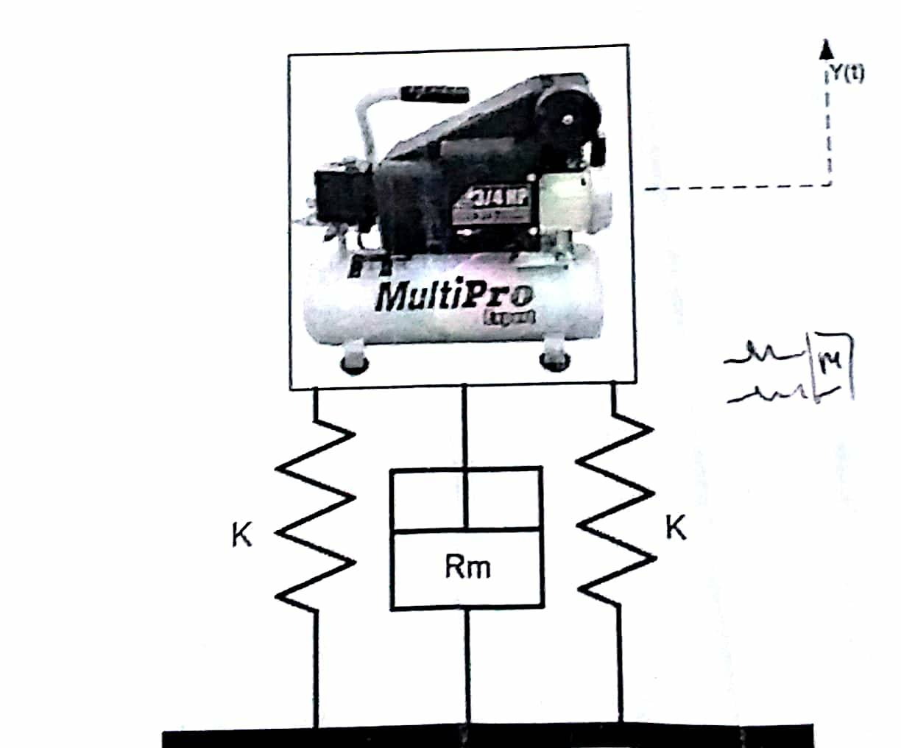
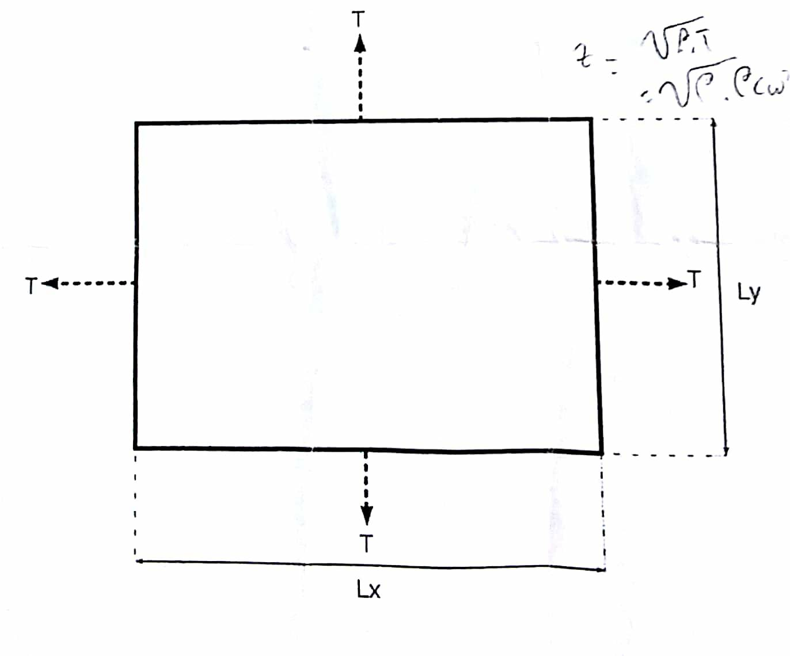
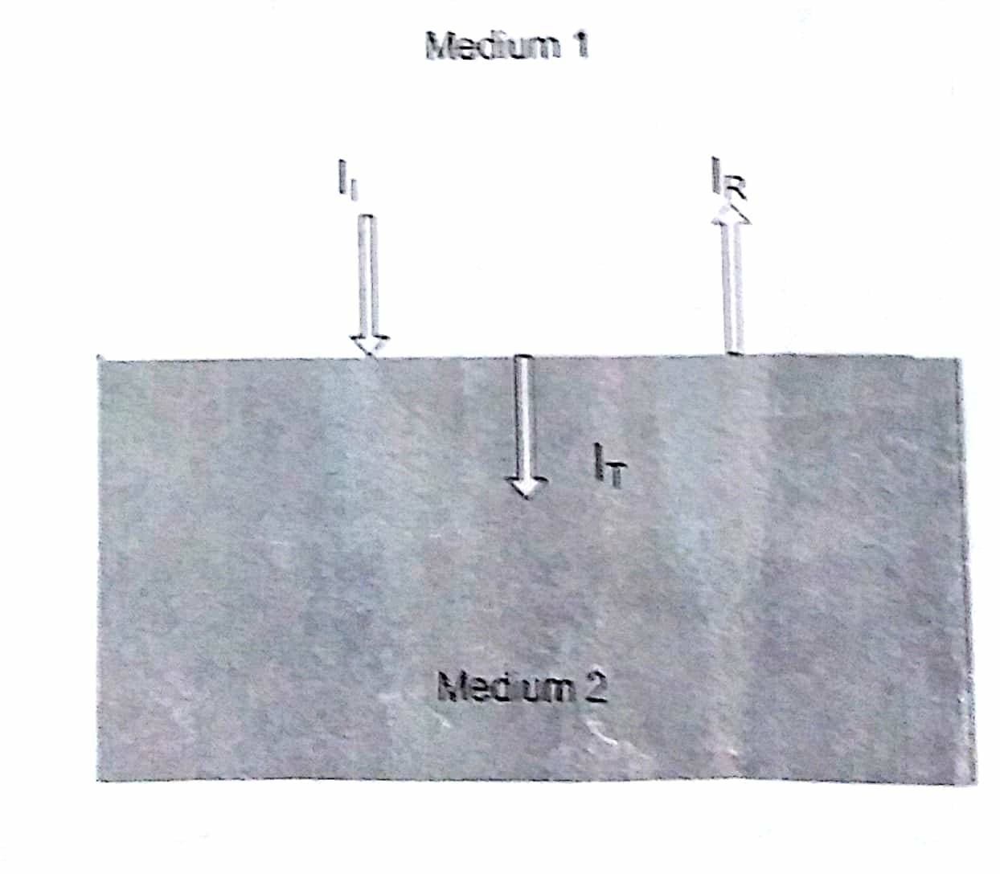

#Soal 1. Suatu sistem bantalan kompressor di industri dimodelkan seperti pada Gambar 1. Diberikan data, massa dari kompressor(M) adalah 50 Kg, dan kekakuan dari tiap pegas (K) adalah 5 $\frac{kN}{m}$ dan resistansi mekanik (Rm) adalah 140 $\frac{kg}{sec}$. Jika dalam keadaan on, kompressor menyebabkan gaya harmonik yang bekerja pada bantalan adalah $f(t)=10\ cos(5t)$

#Soal 2. Gelombang mekanik 2D dinyatakan dengan : \(\frac{\partial^2\xi(x,y,t)}{\partial^2t}=C_w^2\nabla^2\xi(x,y,t)\) Jika suatu membran plat dengan rapat massa per satuan luas $\rho_s\ \frac{kg}{m^2}$ dan dari sisi-sisinya adalah $L_x$ dan $L_y$. Jika membran ditarik dengan tegangan T(N) sepanjang sisinya, sehingga dijamin tidak ada simpangan pada membran pada keempat sisinya, maka standing wave dapat terjadi pada membran plat tersebut \(\xi(x,y,t)=sin(k_xx)sin(k_yy)cos(\omega t)\)

#Soal 3. Gelombang suara datang dari medium 1 ke medium 2. Jika densitas pada medium 1 adalah $1.29\ \frac{kg}{m^3}$ dan keepatan rambat gelombang $340\ \frac{m}{s}$ sedangkan medium 2 memiliki densitas $103 \frac{kg}{m3}$ dan kecepatan rambat gelombang $1480\ \frac{m}{s}$ Jika gelombang datang $I_I$ pada bidang normal, dengan rate energi $10\ \frac{J}{s}$

#Soal 4. Sebuah ambulan menyusul seorang pembalap sepeda sambil membunyikan sirine dengan frekuensi 1600 Hz. Setelah dilewati oleh ambulan pembalap sepeda tadi mendengarkan sirine dengan frekuensi sebesar 1590 Hz. Hitung kecepatan dari ambulan bila kecepatan dari sepeda adalah 8,78 $\frac{km}{jam}$